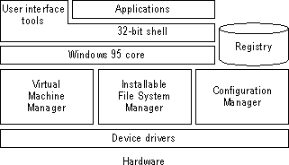
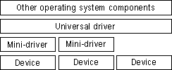
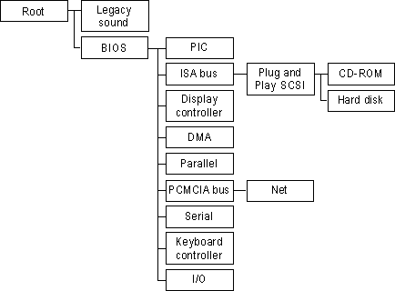
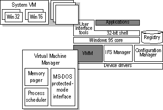
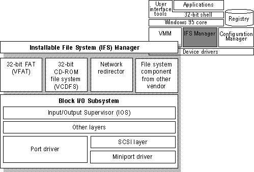
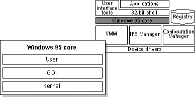
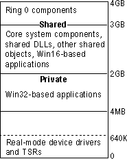
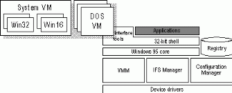
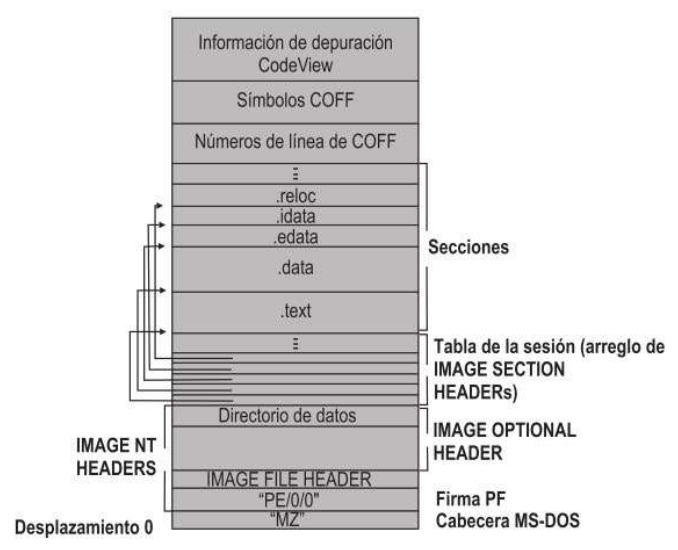

S.O. Multitarea Monousuario
Windows 95
Windows 95
- S.O. de 32 bits en modo protegido
- Multitarea apropiativa con soporte de hilos
- Sistemas de archivos instalables de 32 bits
- Dispositivos de E/S de 32 bits
Estructura del S.O.
Estructura de Windows 95
Aspectos sobresalientes
- Registro de Windows
- Controladores de dispositivos
- Administrador de configuración
- Gestor de Máquina Virtual
- Memoria paginada bajo demanda
- Sistemas de Archivos Instalables
- Soporte de Aplicaciones
Controladores de Dispositivo
Drivers en Windows 95
Gestor de Configuración
Gestor de Configuración
Jerarquía de Dispositivos
Jerarquía de Dispositivos de E/S
Gestor de Máquina Virtual
Gestor de Máquina Virtual
Sistemas de Archivos Instalables
Gestor de Sistemas de Archivos Instalables
Componentes del Núcleo
Núcleo de Windows 95
Mapa de Memoria
Memoria en Windows 95
Soporte de Aplicaciones
Aplicaciones Windows 95
Formato ejecutable Win32
Estructura de un ejecutable P.E.
Bibliografía
- Arquitectura de Windows 95.
- Silva - Sistemas Operativos (1ra. Edición).
- Capítulo 3: Sección 3.2.2
Gracias!
https://sofrcu.github.com/
Esta obra de
Gabriel Arellano está bajo
una
licencia Creative Commons
Atribución-CompartirIgual 4.0 Internacional.